Discovery Phase
1. Guiding Question
“How can we disrupt the competitive landscape of museums by delivering an unexpected solution?”
2. Research Goals
The goal of our research is to identify tension points within the museum visiting experience, cultivate insights, and ultimately, generate concepts that can lead to actionable products to solve these tension points. Ideally, we would like to address issues that may impact all aspects of the museum experience, including for both patrons and museum employees. This includes all facets from presentation of exhibits, to the touring experience, to auxiliary offerings such as cafes and gift shops.
3. Target Audience
In an effort to disrupt the competitive landscape of Museums, our group seeks to interview two separate parties to glean as much information as possible. The two target customer populations are Museum Goers and Museum Administrators. Both groups are most directly affected by museums, either as patrons or employees, and are likely to provide the deepest insights into the museum experience. By interviewing these groups, we believe that we will aggregate enough data to support the discovery phase of our project and substantively draw a conclusion with respect to how we intend on disrupting museums.
Potential customers include individuals who pass the museum but do not enter, workers nearby the museums, and individuals who are given free or discounted admission (i.e. students, senior citizens, etc.).
Outlier customers include tourists, individuals who attend cultural events and conventions, and institutional supporters.
Demographically, we expect to conduct our research across a wide spectrum of individuals. However, some traits we expect to see are:
- Age: 16+
- Sex: Both male and female
- Education Level: likely high school graduates or higher
- Location: living or visiting NYC
4. List of Questions
Questions:
In approaching Museum Goers, we plan to focus on the following questions, while also being open-ended and adaptive to how the conversation might evolve:
- How much time do you spend at museums?
- How did you hear about [X Museum]?
- Have you been to [X Museum] before? If so, how many times/how frequent?
- Did you consider going to other museums? Why [X Museum]?
- What’s your favorite part about attending a museum? What’s your least favorite part?
- Would you recommend [X Museum] to others? Why or why not?
- Are there any parts of your experiences at museums that stand out as particularly notable (either for better or for worse)?
- Are there any products you wish you had that would make your museum-going experience better?
In approaching Museum Administrators, we plan to focus on the following questions, while also being similarly open-ended and adaptive to how the conversation might evolve:
- How has the museum audience changed over the your time here?
- Are there any nagging issues that you have with the operation of [X Museum]?
- What do you think [X Museum] does well?
- Do you have experience working at other museums?
- What are the two most common complaints that you hear from your customers?
- What are your biggest professional responsibilities and goals?
5. Methodology
In identifying tension points within the museum space, we will utilize various research methods. We assume that the majority of our data collection will occur via open-ended interviews, fly-on-the-wall observations, and intercept interviews. Each will take place in different capacity and will help us achieve different notes to utilize in our discovery.
| Research Method | Description |
|---|---|
| Open-Ended Interviews |
|
| Fly-on-the Wall Observation |
|
| Intercept Interviews |
|
| Subject Matter Expert Interviews |
|
| Experience Walkthroughs |
|
Documentation of research activities through these various methods will include, but not be limited to: written notes, photographs, and potentially video and audio.
6. Locations
Locations:
- Tibet House - This museum acts as a cultural center for Tibetan culture by housing galleries, archives, a library, and traveling exhibitions that relate to West Tibet and its ancient traditions of art and culture. The museum is located in Lower Manhattan and is free, though they ask for a suggested donation of $10.
- Grey Art Gallery - Art gallery and exhibition space located within NYU’s Greenwich Village campus. This gallery tradition houses fine art collections and has a broad mission to “collect, preserve, study, document, interpret, and exhibit the evidence of human culture.” The Grey Art Gallery is free to both NYU students and the public, however they ask for a suggested donation of $5.
- New York Hall of Science - NYSCI is New York’s center for interactive science and draws in over half a million students, teacher and families every year. The museum houses many different interactive exhibits that help children learn and enjoy science. Beyond the traditional interactive exhibits, the museum also has a 3D Theater and many traveling exhibits. The museum admittance fee is generally $16 for adults and $13 for children/students, though they do have a select few free hours per week.
- American Museum of Natural History - This museum leads with the mission to “To discover, interpret, and disseminate—through scientific research and education—knowledge about human cultures, the natural world, and the universe.” AMNH is a large, expansive museum in the Upper West Side of Manhattan, and it averages roughly 5 million visits annually. The museum itself staffs over 200 full time scientists and has 33 million specimens of plants, animals, fossils, minerals, rocks and other items of significance in natural history. The museum costs $23 for adult admission and $18 for students/children.
- The New Museum - One of few contemporary art museums that’s dedicated exclusively to presenting contemporary art from around the world. The New Museum is located in Lower Manhattan. It has a strong focus on exposes new art and new artists who otherwise haven’t had opportunities for large exposure or recognition. The New Museum charges $18 for adult admission.
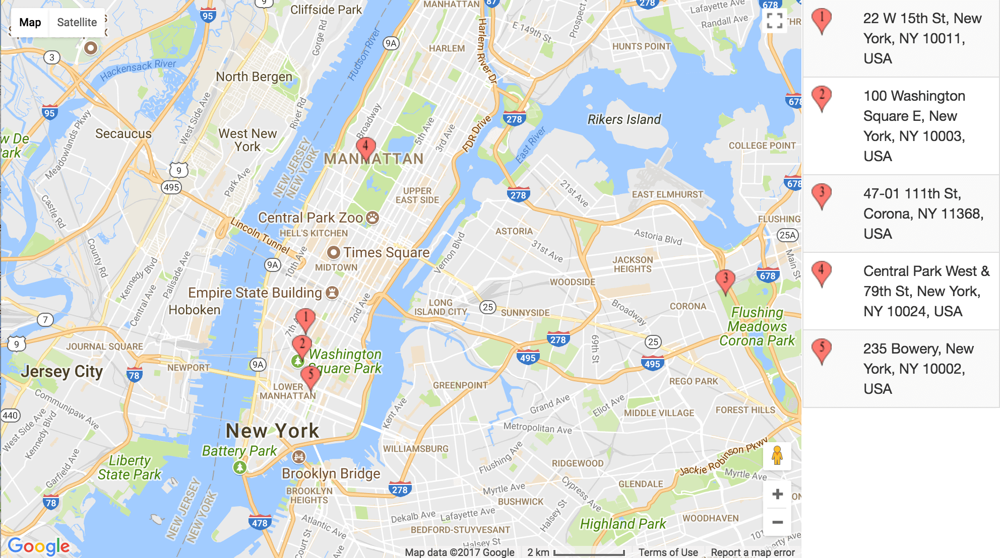
7. Timing
We expect that we will need to conduct our research over several days in order to visit a variety of museums and to talk to both museum goers and museum administrators. We expect our interviews and observations to take between 2 hours and 4 hours, depending on the size and capacity of the museum, as well as the extent to which the interviewees are willing to share their thoughts and experiences at museums. However, we intend to limit each interview to no more than 30 minutes to allow us to aggregate a wider breadth of information and experiences.
Design Phase
1. Grounding the Data
Below are our synthesized notes from the interviews and conversations that we had while researching the museum segment:
New York Hall of Science - 9/16/17
Are there any nagging issues that you have with the operation of NYSCI?
- Exhibits are old
- Distance creates problems
- Maintenance
- Summer Camp maintenance - kids watching 20-30 other kids
What do you think NYSCI does well?
- We offer multiple resources to assist members of the community
- After school tutoring
- Summer camps
- Adult Nights to bring in people
- There are always people around watching over the goers
- Parents can leave their kids and partake in other activities or sit in the lounge
Do you have experience working at other museums?
No
What are the two most common complaints that you hear from your customers?
Distance
Exhibits broken
What are your biggest professional responsibilities and goals?
- Work on creating new interactive activities in my department.
- Repair broken pieces for some exhibits.
- Assist with after school programs.
- Attempt to innovate and disrupt the space with interactive pieces that keep museum goers interested.
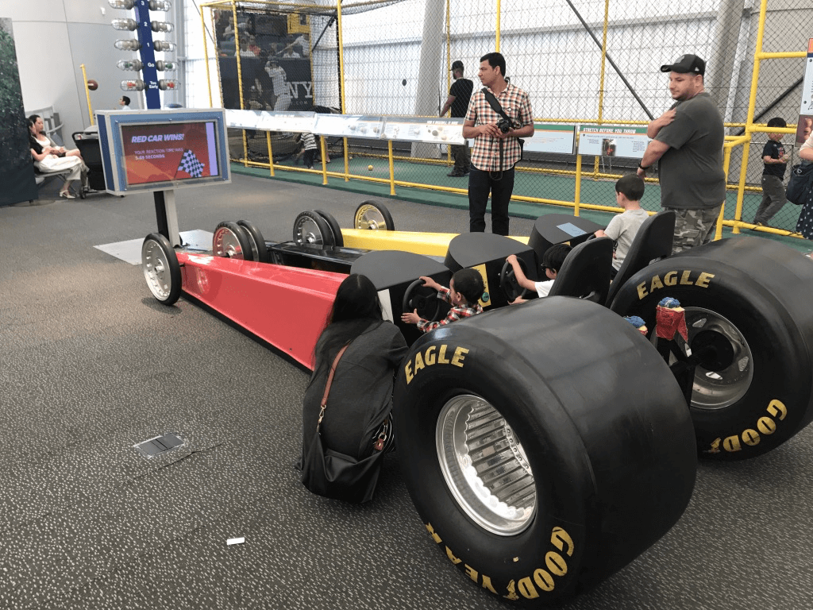
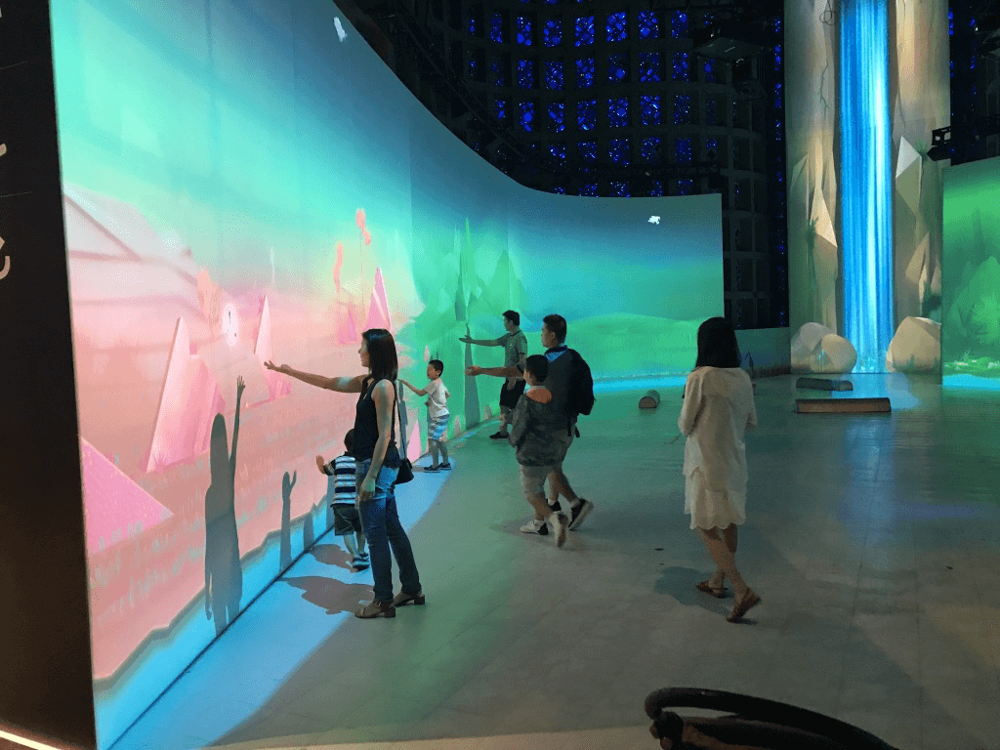
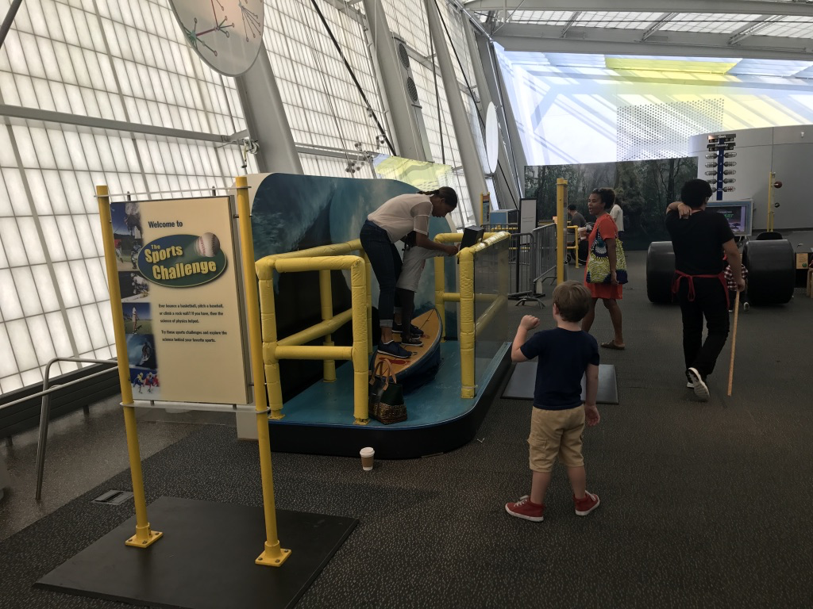
Tibet House - 9/19 @ 4pm
Audience:
- Mostly people entering individually.
- Almost no children.
- Audience very interested in history.
- Very few people visit, most come for workshops where they can learn more about the exhibits.
- New exhibits bring in large audiences but very bottlenecked in the beginning.
Tension Points:
- Many people were looking for more information about pieces aside from what was provided in the plaque.
- Much of the museum was being used for a new exhibit.
- No interactive pieces.
- Getting new visitors is difficult for the museum.
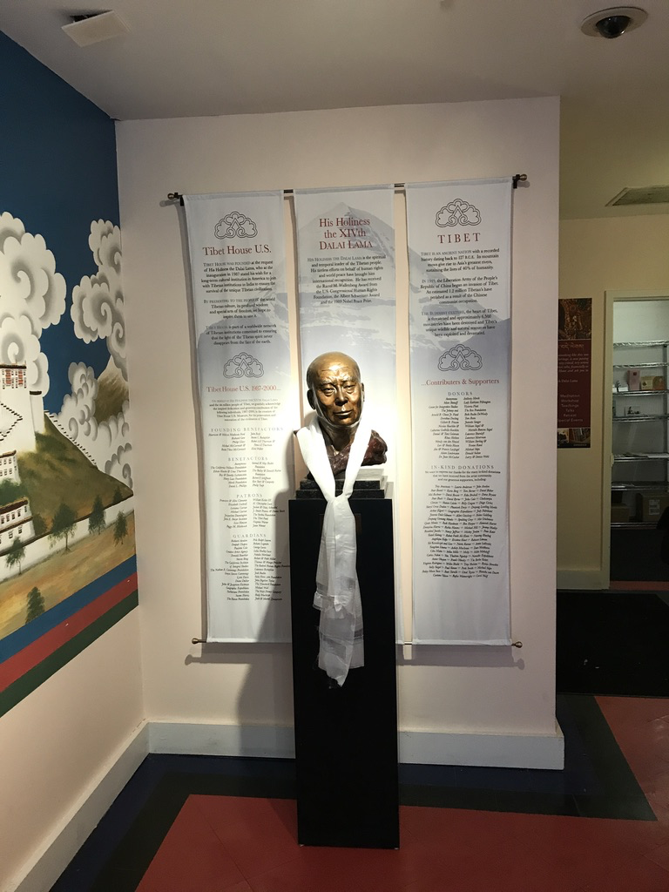
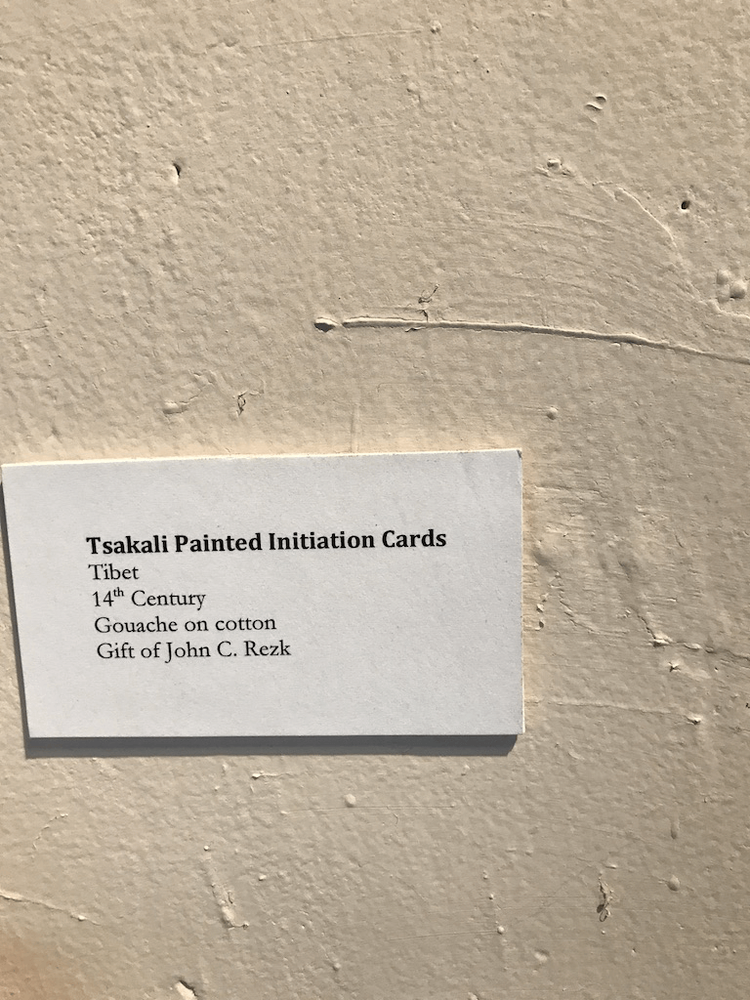
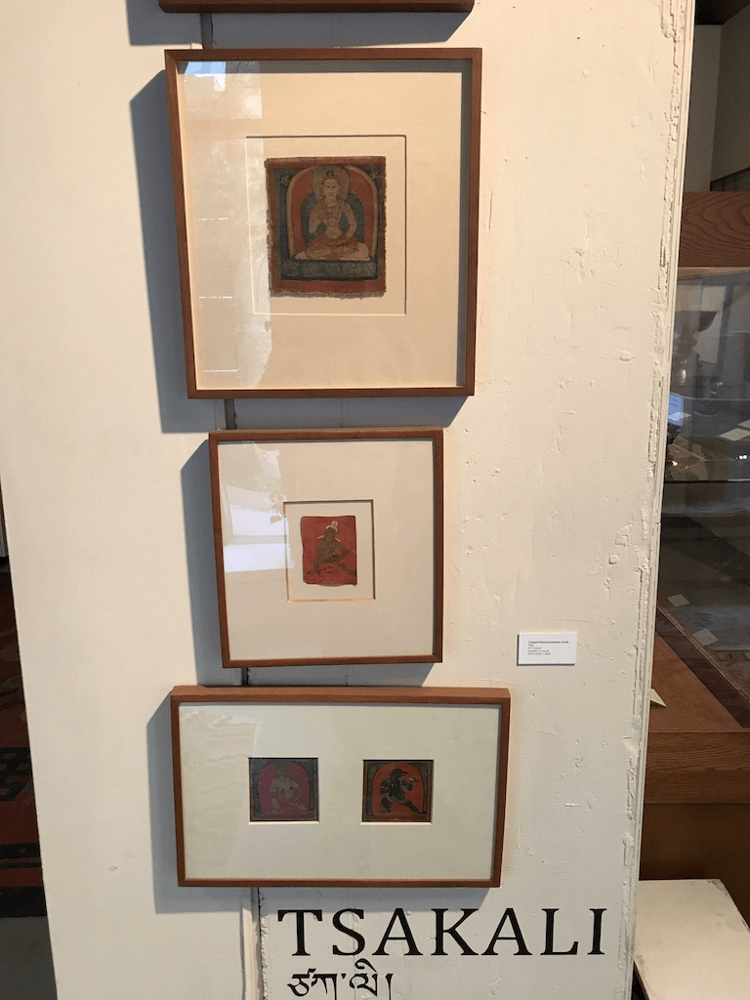
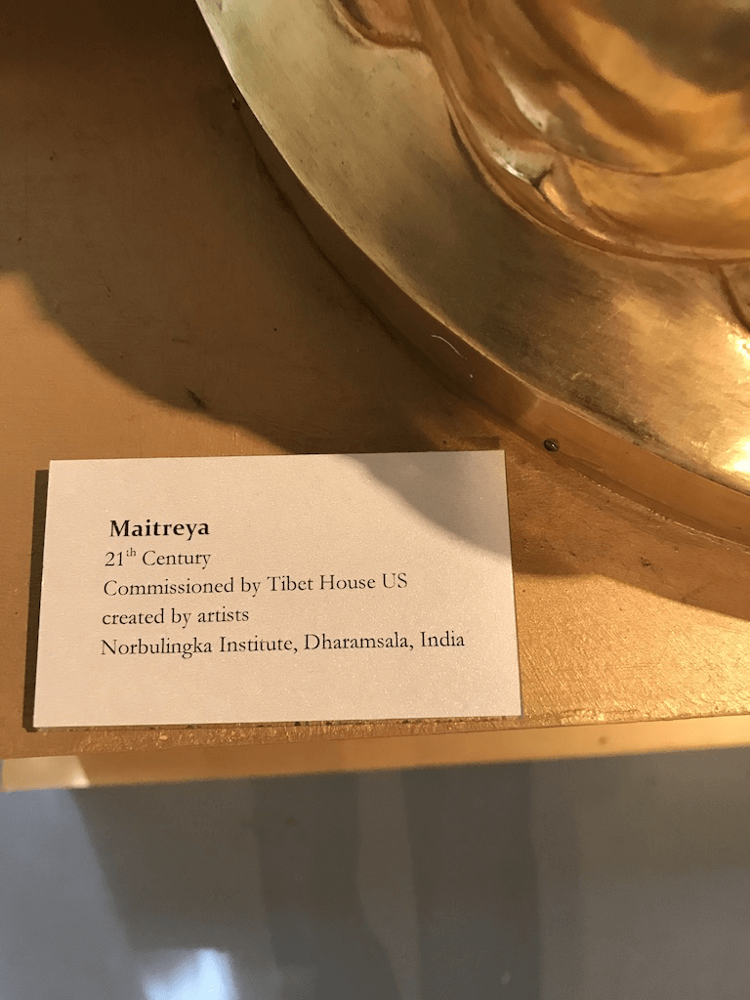
New Museum - 9/21 @ 5pm
Audience:- Mostly people entering individually.
- Few children (only 2 during duration of the visit).
- Audience fairly diverse racially.
- Most people seemed to be mid/late 20s to early 40s.
- Decent number of people waiting outside of the museum who never entered.
Tension Points:
- Many people were not aware of the costs.
- Most exhibits were closed for new installations → no notifications by employees or the museum website.
- There were multiple points where they checked tickets (at the entrance AND at each exhibit).
- Required you to wear backpacks on front or shoulder; didn’t offer any bag check.
- Division of staff did not seem to be optimally used: 1 person at the cafe, 4 at the front desk/ticket counter, 3 people scanning tickets, 2 people handling the exhibits, and 1 person at the gift shop.
Interview with Kyle:
- Only 5 mins downstairs and 10 mins upstairs.
- Was not aware of the installations occuring.
- Enjoyed the audio exhibits.
- Interactive exhibits that he could participate in.
- Suggested the “Ice Cream Museum” as a good example.
Interview with Erin and Caitlyn -- Coworkers and Friends
- White and Asian mixed women both in their late 20s.
- Original purpose to visit the museum was to visit a specific exhibit.
- Exhibit wasn’t actually opened yet.
- Did not check the website before visiting.
- Both talked about going to museums with friends (i.e. group activity, not individually).
- They enjoy interactive exhibits, especially when they can be timely and/or political.
- Also enjoy “different” things → i.e. “candy exhibit where you could take from the exhibit”.
- Provided the Brooklyn Museum and their 1st Saturday events as a good example of something they like in museums.
- It’s both interactive and accessible to the general community.
Post Visit Notes:
- Seemed to indicate you paid whatever you wanted, but nothing really enforced.
- You still needed to ultimately get a ticket though to visit the exhibits.
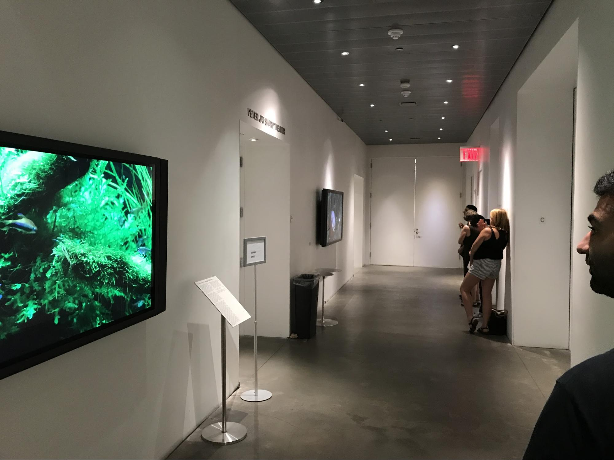
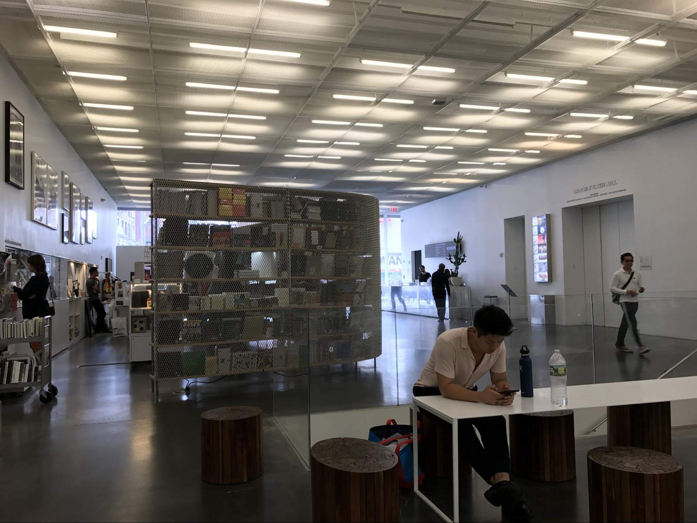
Grey Art Gallery - 9/27@ 11:15am
Audience:
- No one was here when I entered (opens at 11am)
- During the whole visit (approx. 1.5 hours), only 1 person came in
- Older, white male
- Skews to an older demographic
- Very few students come in unless it’s a class group
Tension Points:
- No way of tracking attendance
- People have difficulty finding the museum, which is a big concern for them
- No huge signage outside and you enter through a side entrance to another building
- Only 1 staffer at the time -- college-aged female
- Was able to talk with her for awhile about her experiences and about the usual demographics of the visitors
- The museum rotates through 3 exhibits a year
- Was showing “Partners in Design”, which had opened very recently, and was said to be making the museum “busier now than usual”
- Even though there was only 1 person during ~1.5 hours of my visit
- Have a mixture of photos, objects, and some traditional art
- Museum has a lot of open space
- Museum has a suggested donation of $5, but states it is free for people with an affiliation with NYU (students, professors, etc.)
- Did not ask for a donation from me nor asked to see my NYU student ID
- Claims that 80-100 people a day visit on a typical Saturday
- Mandatory bag and coat check when you enter
- Most visitors are in large groups(Families, School Groups, Tourists)
- Almost all geared towards children
- Audience was very interested in the interactive pieces and installations
- Most visitors use the pay-what-you-will option from the tellers over the standard rate from Kiosks
- Very large building
- Multiple exhibits rotate throughout the year
- Much is geared towards science and education
- Very Large, directions not great
- Many exhibits have very limited information on plaques but you can get more through the audio tours
- Very easy to get lost
- Many of the pieces are “bare bones literally”
- Subway ads
- Friends
- Part of class assignment
- Famous artist/exhibition brought me to the museum
- Every season - once every 3 months
- Twice a year
- Infrequently
- Architecture
- Locations / Views
- Aspirational - want to be like the types of people who go to museums
- Non-piece portions (i.e. book collection at the New Museum)
- Always packed and crowded
- Heavy focus on a certain type (i.e. only American art)
- Don’t understand the art
- Expensive
- Lack of quality or interest in some exhibits
- For big museums like Whitney and New Museum, they can use better signages, better guidances, directions
- Bad design
- There are a lot of people there, a lot of them get lost, and people are just crashing into each other
- Museum experiences in London were better
- Socialize with friends and family - family trip
- Mostly performance exhibits
- Desire to learn new things
- Seek inspirations
- Value listening to others opinions and hearing diverse perspectives
- Support community events/organization
- Seeing an exhibit or performance at this particular location
- Experience high-quality art
- Seeing a specific individual artist’s performance or artwork
- Low cost - free admission - NYU students
- Attending live music, theater, dance performance in the museum
- See the exhibition as a plus
- Part of classes
- Trying new things
- My gf/bf wanted to come
- Time commitment
- Cost - too expensive
- Too difficult to get there - distance - commute
- Not having anyone to go with
- Rather do something else to wind down
- TV watching, exercising, movies, etc
- Lack of parking
- Don’t understand the art
- Lack of previous exposure
- Interactions
- Purpose
- Attention
- Community
General Notes:
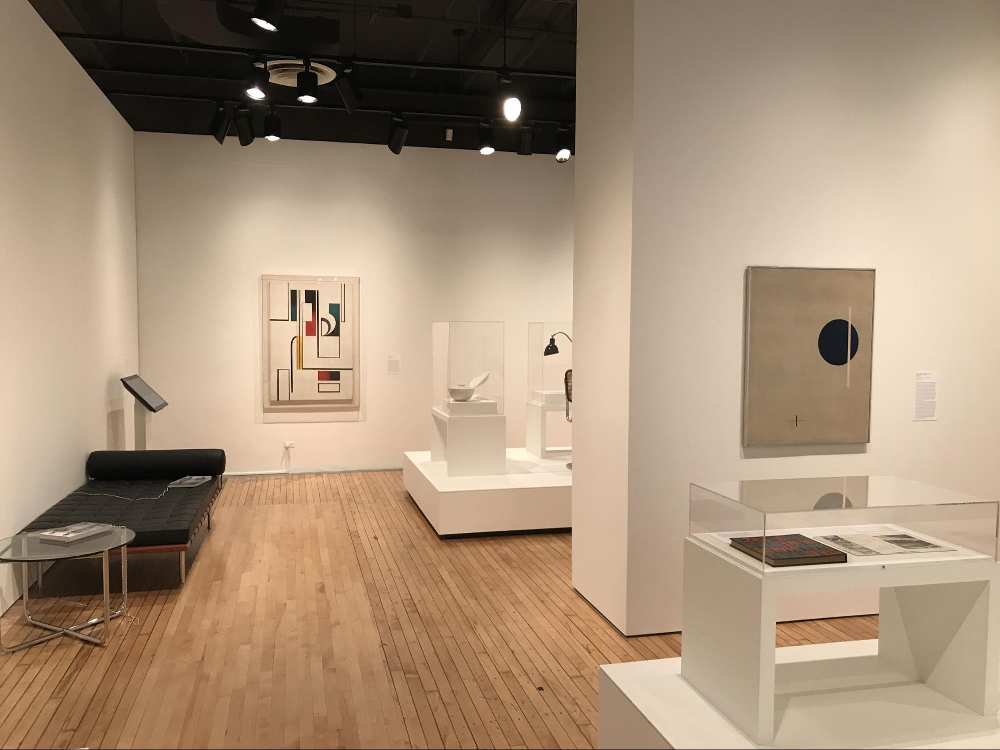
American Museum of Natural History - 10/12 @ 3pm
Audience:Tension Points:
General Surveys done throughout the research process
Ways people hear about different museums:
Frequency of visits to museums:
Favorite parts of visiting a museum:
Least favorite parts of visiting a museum:
Are there any parts of your experiences at museums that stand out as particularly notable (either for better or for worse)?
Why people go to museums:
Why people don’t go to museums:
2. Organize, Code, and Cultivate Insights
Using an insight board allowed us to organize our thoughts into useful clusters, which provided direction for the future of our project. We started by interpreting our observations, jotting them down on post-it notes, and placing them on the board.
From there, we categorized our observations as per the provided hierarchy: Focus Area, Theme, Sub-theme, and Observations:
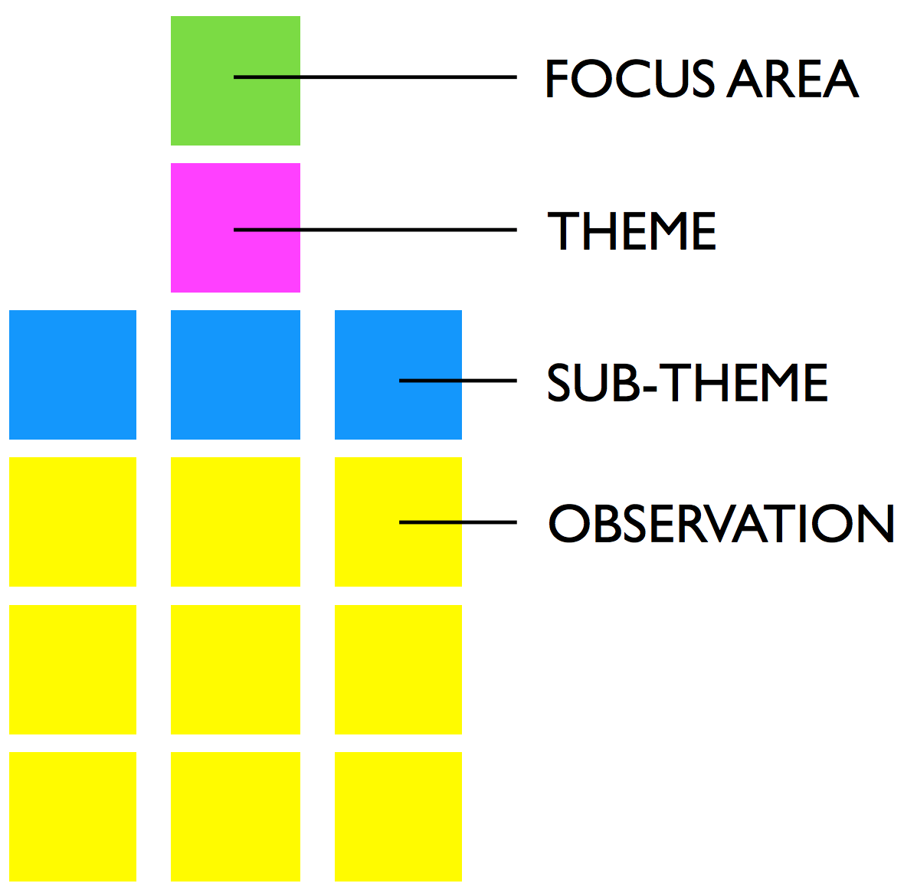
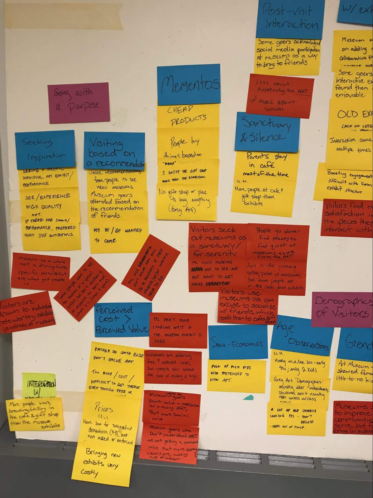
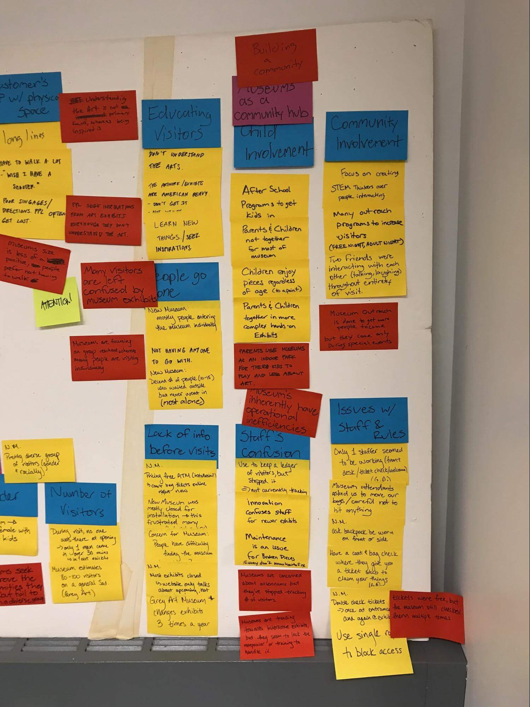
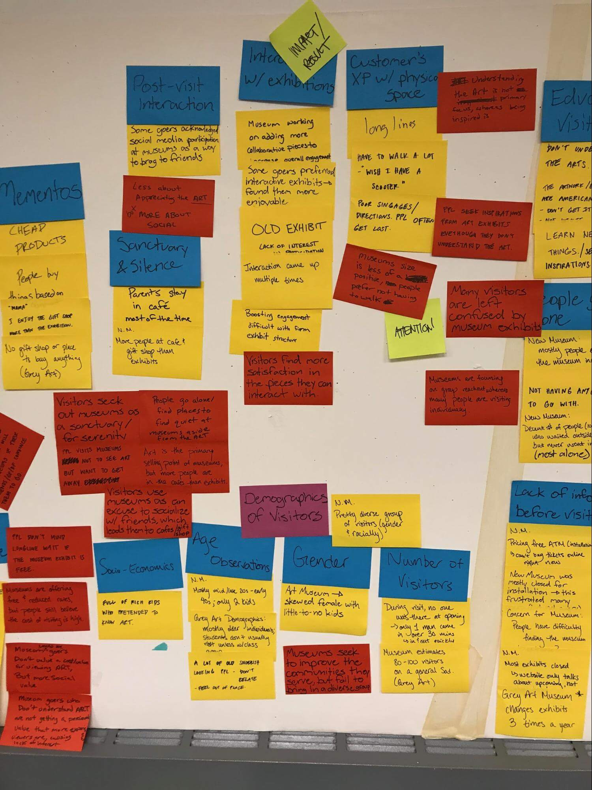
We uncovered four major themes in our analysis:
As we analyzed the themes that we had deciphered through our observations, we looked for our patterns in how our themes related to each other. Through those patterns, we identified that an element of interactivity weaved its way throughout the majority of our observations and paved the way for our opportunity: there’s an opportunity to use interactive technology to keep users engaged through museums.
Delivery Phase
1. Crafting a Disruptive Hypothesis
In crafting a disruptive hypothesis, we took the assumptions (cliches) surrounding our opportunity from the lenses of both producers (museums administrators) and consumers (museum goers). By using the Disruptive Hypothesis worksheet we were able to take those cliches and shape them into new, potential concepts. Overall this experience helped us explore deeper into our segment opportunity and understand how we were going to draw out a concept.
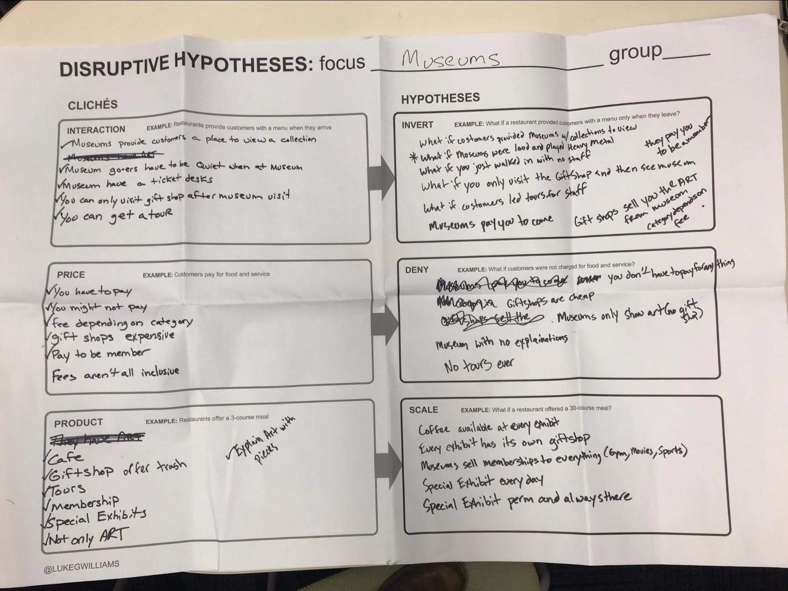
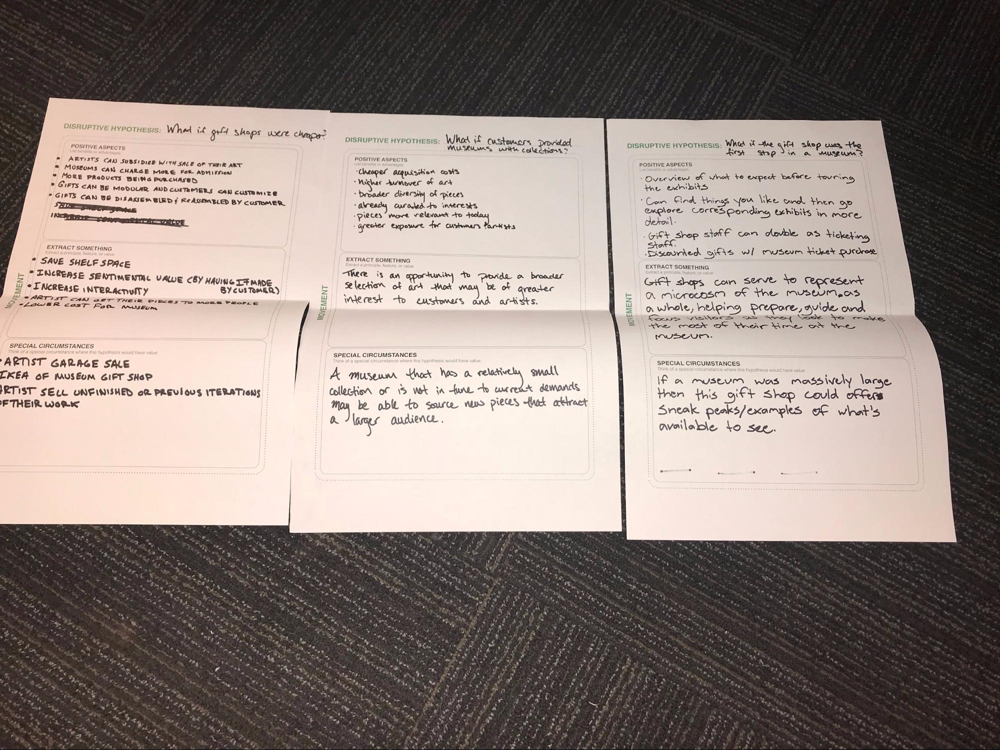
2. Idea Generation
Through our exercise in class, we were able to utilize random, creative objects to try and inspire new ideas. We approached this with the intention of generating as many ideas as we could as related to our opportunity.
3. Concept Development & Testing
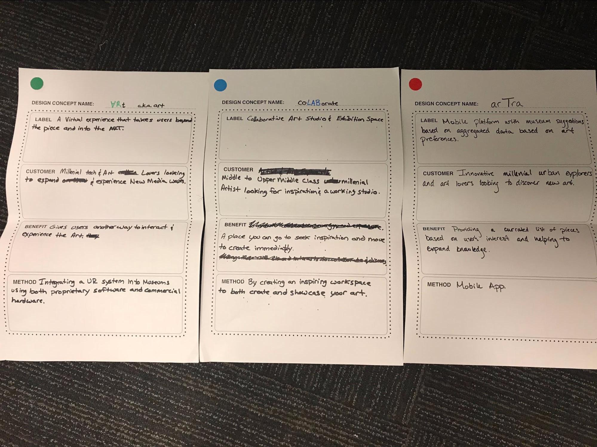
From our concept development, we came up with 3 design concepts.
- ART:
- Label: A virtual experience that takes users beyond the piece and into the ART
- Customer: Millennial tech and art lovers looking to expand and experience new media waves
- Benefit: Gives users another way to interact and experience the art
- Method: Integrating a VR system into museums using both proprietary software and commercial hardware
- coLABorate:
- Label: A collaborative art studio and exhibition space
- Customer: Middle to upper middle class millennial artists looking for inspiration and a working studio
- Benefit: A place you can go to seek inspiration and move to create immediately
- Method: By creating an inspiring workspace to both create and showcase your art
- arTra
- Label: Mobile platform with museum suggestions based on aggregated data based on art preferences
- Customer: Innovative millennial urban explorers and art lovers looking to discover new art
- Benefit: Providing a curated list of pieces based on user’s interest and helping to expand knowledge
- Method: Mobile application
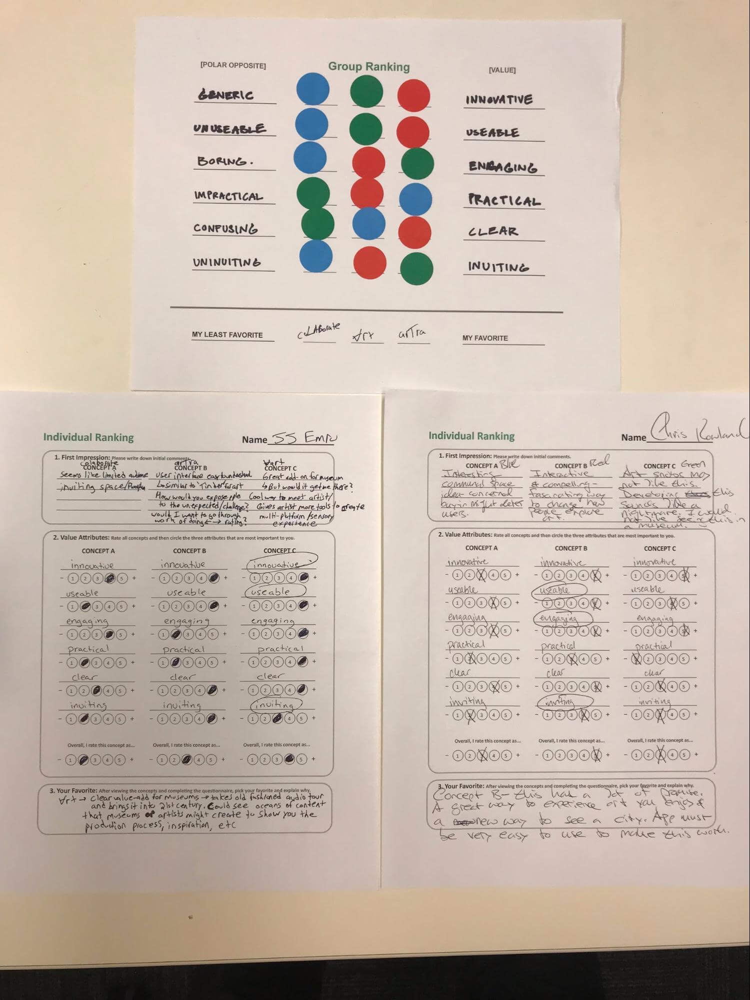
From our concept testing, it became very clear that coLABorate was the least favorite concept. While the testers believed it was the most practical option, they overall did not find it unique or interesting.
Thus, the focus shifted to arTra and ART, which were both viewed as innovative, usable, engaging, and inviting to our testers. While combined, they ultimately preferred arTra, they were split on their opinions individually on ART and arTra.
However, our team discovered a potential new way to view ART. One of the testers thought of ART “takes audio tour and brings it into [the] 21st century” and believed there could be lots of ways museums could utilize it to share information. We took this approach and decided to pivot away from VR to an AR model. We believed that we could maintain a lot of the same ideas (i.e. virtual experience), while incorporating aspects from the testers and from arTra. We decided that the AR headset should allow museum goers to be able to interact with different modules to learn more about the pice and the artist, as well as showing other related pieces throughout the world, incorporating one of the main functionalities of arTra.
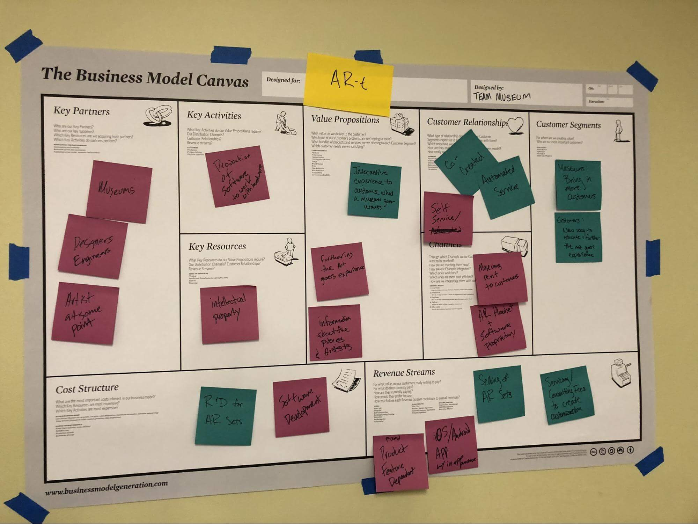
When looking at the business model canvas, we were able to take some key ideas of how to grow ART into a feasible business:
- Key Partners:
- Museums
- Designers
- Engineers
- Artists
- Key Activities:
- Production of software to work with hardware
- Key Resources:
- Intellectual property
- Value Proposition:
- Interactive experience to customize what a museum goer wants
- Furthering the art goers experience
- Information about pieces and artists
- Customer Relationships:
- Co-Created
- Automated Service
- Self Service
- Chanels:
- Museums rent to customers
- AR headset and software proprietary
- Customer Segments:
- Museums - help to bring in more customer
- Customers - new ways to educate and further the art goers experience
- Cost Structure:
- R&D for AR sets
- Building costs
- Software development
- Revenue Streams:
- Fixed product feature dependent
- iOS/Android app with in app purchase
- Selling or renting of AR sets
- Servicing/consulting fees to create customization
4. Visualizing Our Idea
Storyboarding our Concept:
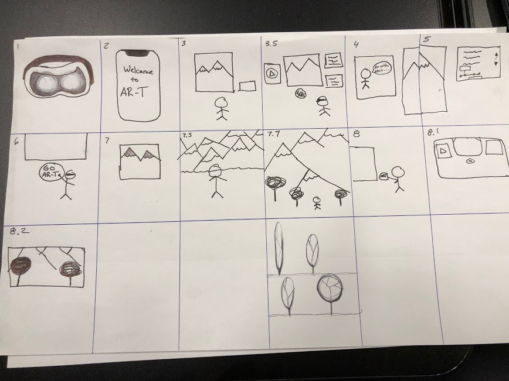
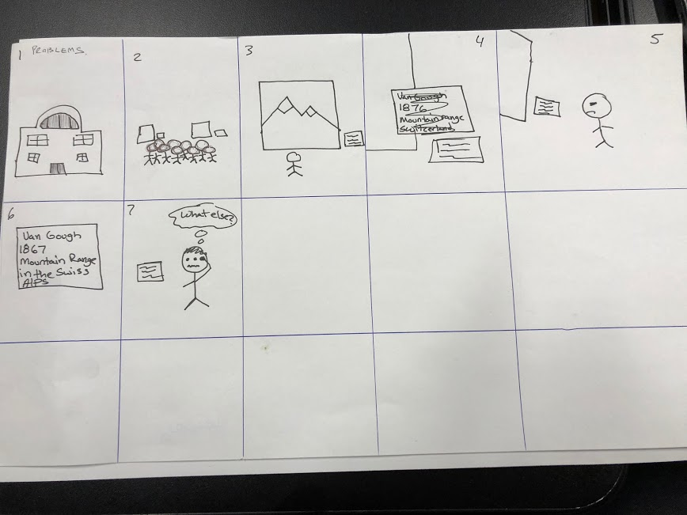